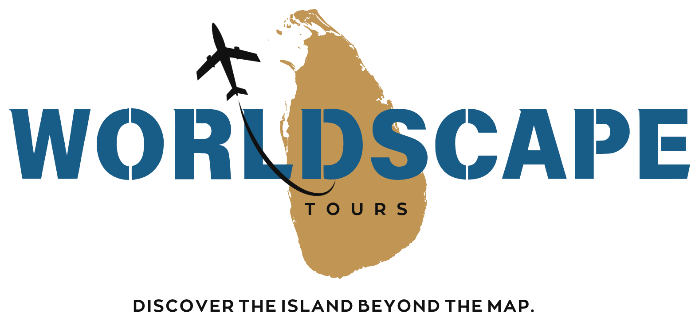

01
Day 01 – Airport to Kandy
Arrival → Pinnawala → Kandy
- Airport welcome and chauffeur pickup
- Pinnawala Elephant Orphanage
- Temple of the Sacred Tooth Relic
- Kandy Lake and viewpoint
- Hotel check-in and overnight in Kandy

Build my tripA compact introduction to Sri Lanka with heritage, tea country and a Colombo finish.
Arrival → Pinnawala → Kandy
Kandy → Peradeniya → Ramboda → Nuwara Eliya
Nuwara Eliya → Colombo → Airport
These are the main stops in this package. Timing can be adjusted to suit your arrival, pace and interests.